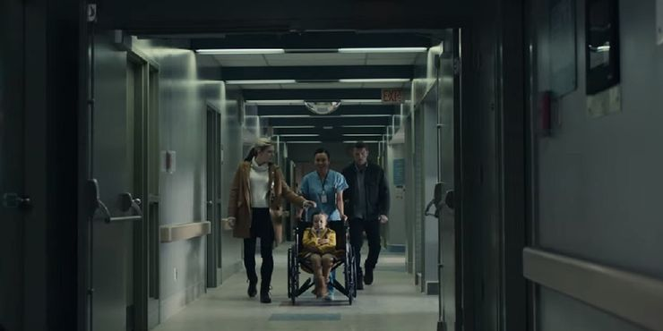

Fractured (2019)

Movie Summary
Fractured (2019) is a movie with the genre of psychological thriller. The movie is about a Father that is sceptical to a hospital that his family went went in. His wife and daughther dissapers after entering the emergency room. He becomes more sure that the hospital is scheming something. Something is not right about that hospital.

Cast
Sam Worthington plays as "Ray Monroe", Lily Rabe plays Ray Monroe's wife "Joanne Monroe", and Lucy Capri plays the daughter "Peri Monroe".
Year Published
This movie was made/produced in 2018 and publicly published on October 9th 2019 on Netflix